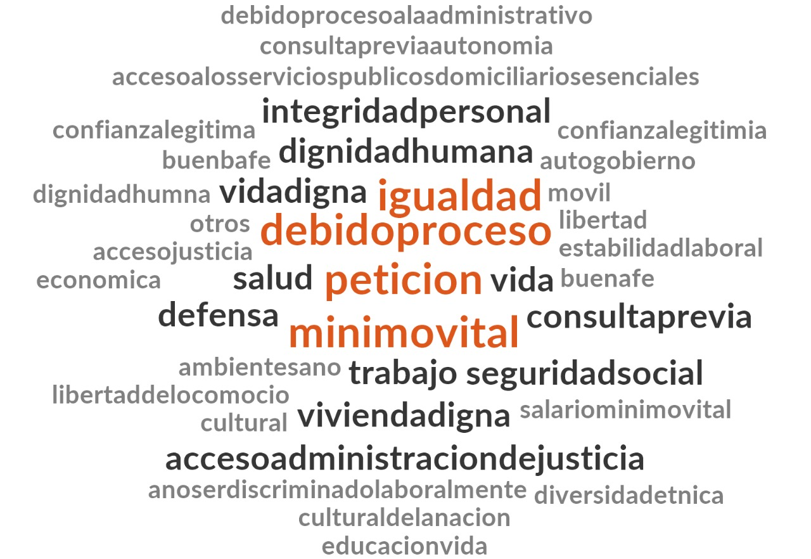

LDAh1>
Derechos fundamentales de cada tutela entre 2019 y 2021
Construí una gráfica con los derechos tutelados en cada tutela interpuesta contra la ANI entre 2019 y 2021. Estos datos se pueden acceder con un menú que se despliega hacia abajo para escoger el año. La idea es que todo quede en la misma página.
Gráficas de frecuncias mensuales de cada derecho tutelado
Frecuencias mensuales 2019
Frecuencias mensuales 2020
Frecuencias mensuales 2021
Piecharts de cómo qué participación tiene cada derecho como porcentaje del total en cada año
Frecuencias mensuales 2019
Frecuencias mensuales 2020
Frecuencias mensuales 2021
